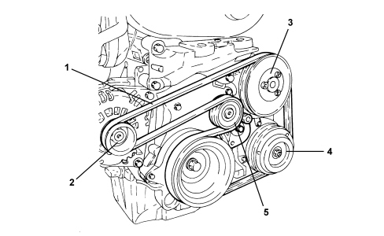

INTRODUCTION - VARIOUS ENGINE COMPONENTS DRIVE
- Path
- Descriptions > 10 ENGINE > 1092 ENGINE COMPONENT MISCELLANEOUS DRIVES > INTRODUCTION - VARIOUS ENGINE COMPONENTS DRIVE
- Kind
- system description
- Applies to
- engines: 1.8; all production periods
- Interactive page
- https://sloeber94.github.io/elrnDB-fCrm/en/#/194002416
Applies to: engines: 1.8; all production periods
SINGLE DRIVE BELT FOR VARIOUS ENGINE COMPONENTS
It is the Poly-V type and controls the alternator, water pump and air conditioning compressor.
There is an automatic tensioner which means that no maintenance operations are required.

1. Various components single drive belt on engine
2. Alternator
3. Water pump
4. Air conditioning compressor
5. Automatic tensioner